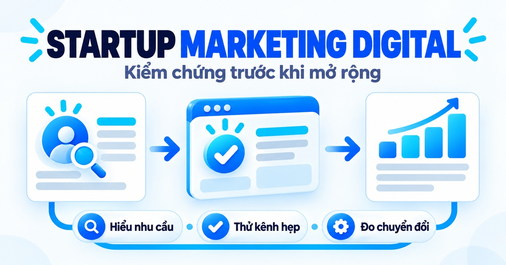
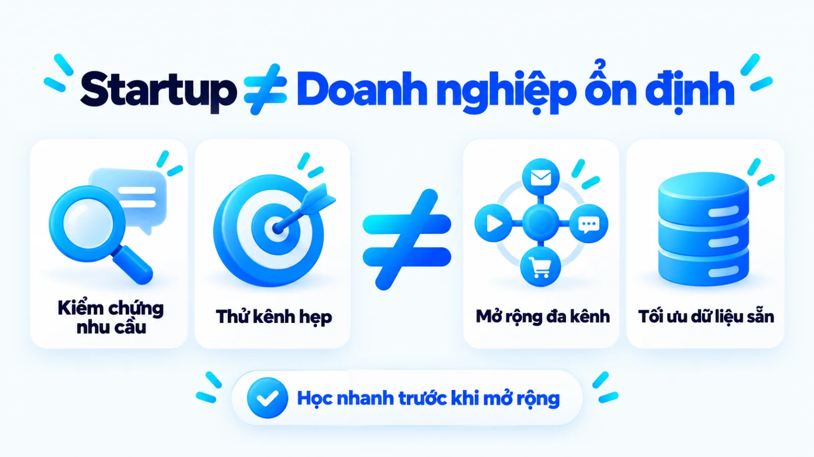
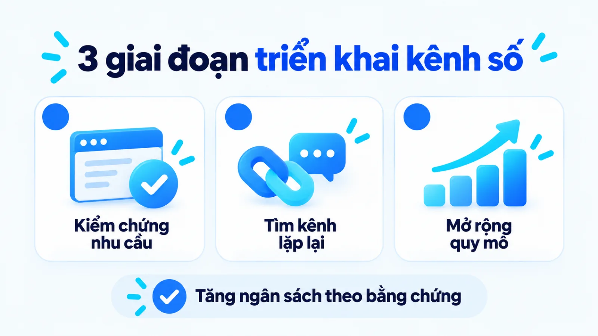
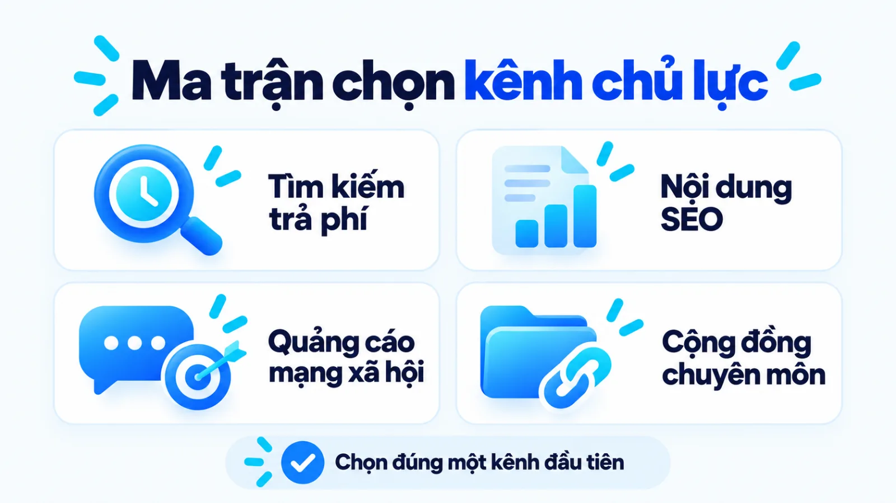
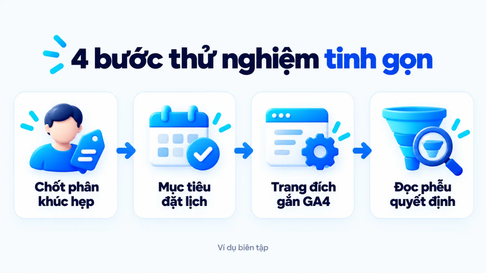
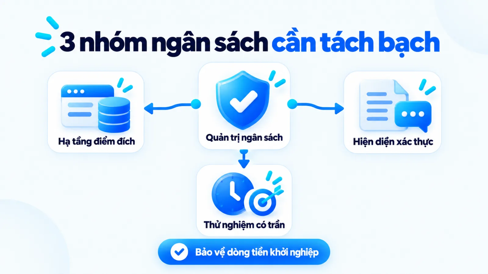
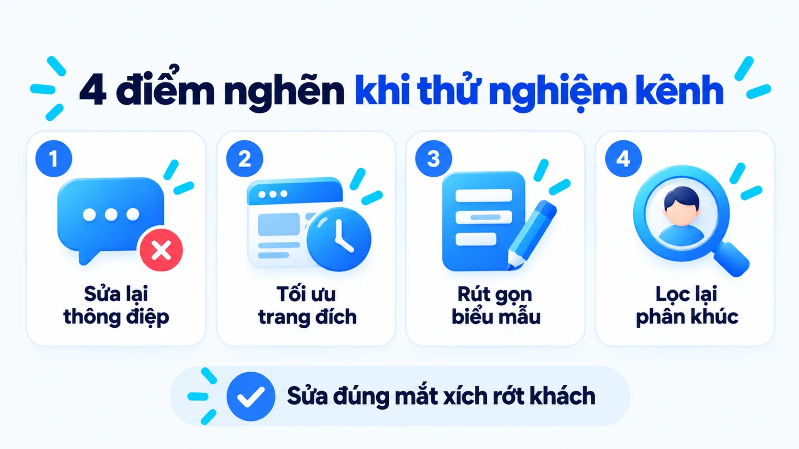
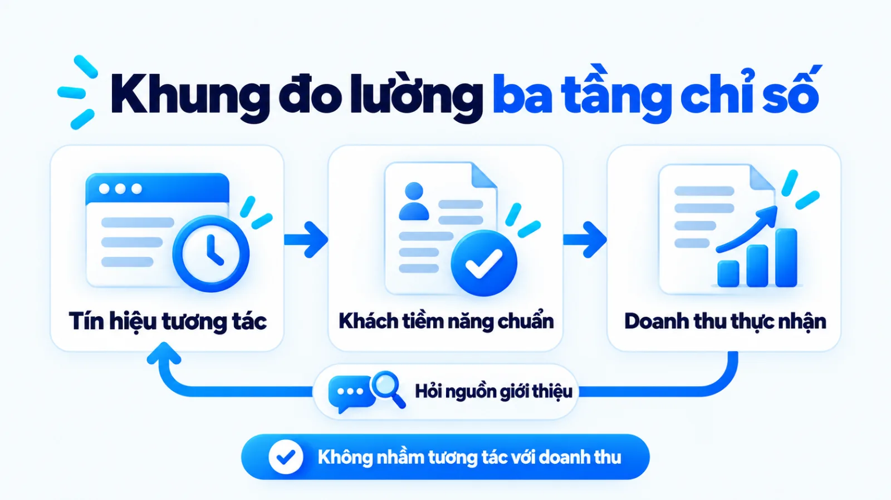

Startup marketing digital là gì, cách bắt đầu
Startup marketing digital là hệ thống quyết định về phân khúc khách hàng, đề nghị giá trị, kênh tiếp cận và phép đo trên môi trường số nhằm kiểm chứng nhu cầu thị trường trước khi mở rộng quy mô. Với đội ngũ khởi nghiệp có ngân sách, nhân sự và dữ liệu lịch sử còn mỏng, việc sao chép bộ kênh của doanh nghiệp lớn hoặc chạy quảng cáo dàn trải thường làm cạn vốn trước khi hiểu khách hàng thực sự trả tiền vì lý do gì. Khi ưu tiên tốc độ học hỏi từ phản hồi người mua thay vì độ phủ bề nổi, nhà sáng lập mới chọn đúng điểm chạm tạo ra chuyển đổi lặp lại. Tôi là Lê Tuấn Việt, Marketing Leader tại TAKI Group. Trong bài viết này, tôi phân tích sự khác biệt của tiếp thị số tại startup, nguyên tắc chọn kênh chủ lực theo giai đoạn kiểm chứng và cách đọc tín hiệu đo lường khi dữ liệu doanh thu chưa nhiều.
- Đăng ngày
- Cập nhật

Tóm tắt nhanh
- Startup marketing digital là hệ thống quyết định từ khách hàng mục tiêu, đề nghị giá trị đến kênh và phép đo để kiểm chứng thị trường, không đồng nhất với việc mua quảng cáo trả phí.
- Doanh nghiệp khởi nghiệp nên triển khai tiếp thị số theo ba giai đoạn gồm kiểm chứng nhu cầu, tìm kênh tạo chuyển đổi lặp lại và mở rộng phần đã có bằng chứng.
- Khi ngân sách và nhân sự còn mỏng, việc tập trung vào một kênh thu hút chính đi kèm một điểm đích chuyển đổi giúp dữ liệu đủ mẫu để ra quyết định.
- Khung đo lường cần tách bạch ba tầng gồm tín hiệu tương tác, hành vi chuyển đổi đạt chuẩn và doanh thu xác nhận để không nhầm lượt xem với hiệu quả tài chính.
Mục lục bài viết8 phần
Startup marketing digital là gì?
Startup marketing digital (tiếp thị số cho doanh nghiệp khởi nghiệp) là hệ thống quyết định về phân khúc khách hàng, đề nghị giá trị, kênh tiếp cận và phép đo trên môi trường số nhằm kiểm chứng nhu cầu thị trường trước khi mở rộng quy mô. Khác với việc chỉ mua quảng cáo hay gom công cụ, hoạt động này ưu tiên tốc độ học hỏi từ phản hồi người mua khi ngân sách, nhân sự và dữ liệu lịch sử còn hạn chế.
Theo hướng dẫn năm 2024 của U.S. Small Business Administration (SBA, Cơ quan Quản lý Doanh nghiệp Nhỏ Hoa Kỳ), nghiên cứu thị trường giúp doanh nghiệp kết hợp dữ liệu hành vi người tiêu dùng với xu hướng kinh tế để xác nhận và hoàn thiện ý tưởng kinh doanh ngay từ đầu. Đặt trong bức tranh Marketing cho doanh nghiệp, tiếp thị số ở giai đoạn khởi sự cần làm rõ hai điểm cốt lõi gồm sự khác biệt với doanh nghiệp đã ổn định và ranh giới giữa bốn tầng quyết định thực thi.

Khác biệt giữa startup và doanh nghiệp đã ổn định
Trong bài báo công bố tháng 5/2013 trên Harvard Business Review, giảng viên Steve Blank chỉ rõ startup không phải là phiên bản thu nhỏ của một công ty lớn: tổ chức khởi nghiệp đi tìm một mô hình kinh doanh có thể lặp lại và mở rộng, trong khi doanh nghiệp đã ổn định tập trung thực thi mô hình đã có. Sự khác biệt về bản chất tổ chức này dẫn đến bốn tiêu chí đối chiếu trực tiếp trong cách vận hành tiếp thị số dưới đây.
| Tiêu chí đối chiếu | Startup marketing digital | Doanh nghiệp đã ổn định |
|---|---|---|
| Mục tiêu ưu tiên | Kiểm chứng giả thuyết nhu cầu, thông điệp và tìm kênh có chuyển đổi lặp lại | Tối ưu hiệu suất thực thi, mở rộng thị phần và duy trì độ nhận diện thương hiệu |
| Dữ liệu nền sẵn có | Dữ liệu lịch sử gần như bằng không; phải mua hoặc thu thập tín hiệu từ đầu | Đã có lịch sử chuyển đổi, chân dung người mua và chi phí thu hút khách hàng chuẩn |
| Phân bổ nguồn lực | Tập trung vào các đợt thử nghiệm ngắn hạn có giới hạn rủi ro trên một kênh hẹp | Chia ngân sách dài hạn theo quý hoặc năm trên hệ thống đa kênh đã được chứng minh |
| Tiêu chí mở rộng | Chỉ tăng ngân sách khi trang đích và thông điệp tạo ra khách hàng đạt chuẩn | Mở rộng theo hạn mức chi phí mục tiêu và công suất phục vụ của bộ phận bán hàng |
Giới hạn khi đọc bảng: ranh giới giữa hai nhóm không nằm ở số năm thành lập trên giấy phép mà nằm ở việc sản phẩm đã đạt trạng thái khớp với thị trường hay chưa. Một công ty đã hoạt động ba năm nhưng tung ra dòng sản phẩm hoàn toàn mới cho phân khúc chưa từng phục vụ vẫn phải vận hành theo cơ chế kiểm chứng của startup.
Ranh giới giữa chiến lược, kênh và chạy quảng cáo
Nhiều nhà sáng lập đồng nhất việc làm marketing số với việc thuê người bấm chạy quảng cáo hoặc mở tài khoản trên khắp các mạng xã hội. Khi sáp nhập bốn tầng gồm chiến lược, kế hoạch thử nghiệm, kênh triển khai và công cụ thành một, đội ngũ rất dễ thay đổi công cụ liên tục trong khi lỗi thực sự nằm ở đề nghị giá trị chưa đủ sức thuyết phục người mua.
Điểm tôi muốn làm rõ là thứ tự phụ thuộc giữa bốn tầng này: chiến lược xác định phân khúc khách hàng và lý do họ chọn giải pháp; kế hoạch thử nghiệm chọn giả thuyết cần kiểm tra trong kỳ ngắn hạn; kênh triển khai là đường dẫn đưa thông điệp tới người mua; còn công cụ chỉ là phần mềm hỗ trợ đo lường hoặc tự động hóa thao tác. Sao chép máy móc danh sách kênh của tập đoàn lớn khi chưa chốt xong tầng chiến lược là con đường ngắn nhất làm cạn ngân sách khởi sự.
Ví dụ biên tập, không phải kết quả khách hàng thật
Tình huống xuyên suốt: Startup phần mềm lịch hẹn nha khoa với đội ngũ 2 người
Một startup tại Việt Nam phát triển phần mềm nhắc lịch khám tự động cho các phòng khám nha khoa quy mô từ 2 đến 5 ghế máy, với đội ngũ ban đầu chỉ gồm một nhà sáng lập phụ trách sản phẩm và một nhân sự kiêm nhiệm marketing cùng bán hàng. Thay vì chia ngân sách mỏng cho cả quảng cáo video, bài PR và sàn thương mại, đội ngũ quyết định dùng môi trường số để kiểm chứng xem chủ phòng khám có thực sự sẵn sàng trả phí hàng tháng để giảm tỷ lệ khách bỏ hẹn hay không.
Startup bắt đầu Digital Marketing ở giai đoạn nào?
Startup nên bắt đầu Digital Marketing ngay từ giai đoạn kiểm chứng nhu cầu và đề nghị giá trị, nhưng mục tiêu lúc này là thu thập tín hiệu phản hồi thực tế thay vì tối ưu quy mô lưu lượng truy cập. Thứ tự ưu tiên trên môi trường số thay đổi qua ba giai đoạn gồm kiểm chứng bài toán khách hàng, tìm kênh tạo nhu cầu lặp lại và mở rộng phần đã có bằng chứng.
- Giai đoạn 1 (Kiểm chứng nhu cầu): Dùng trang đích tối thiểu và tiếp cận hẹp để xác nhận vấn đề khách hàng có thật trước khi mở rộng sản xuất.
- Giai đoạn 2 (Tìm kênh lặp lại): Thử nghiệm có kiểm soát trên một đến hai kênh chủ lực nhằm xác lập tỷ lệ chuyển đổi nền và chi phí thu hút khách hàng.
- Giai đoạn 3 (Mở rộng quy mô): Tăng ngân sách và xây dựng tài sản nội dung dài hạn khi điểm chuyển đổi cùng hệ thống đo lường đã vận hành ổn định.

Giai đoạn 1: Kiểm chứng nhu cầu và đề nghị giá trị
Báo cáo phân tích hậu kiểm năm 2021 của CB Insights trên hơn 110 bài mổ xẻ startup thất bại toàn cầu cho thấy nguyên nhân lớn nhất chiếm 35% là không có nhu cầu thị trường, chỉ xếp sau việc cạn tiền mặt hoặc không gọi được vốn mới (một startup có thể nêu nhiều nguyên nhân đồng thời). Tài liệu hướng dẫn của SBA (2024) tại Hoa Kỳ cũng nhấn mạnh việc tìm hiểu tệp người mua ngay từ khi sản phẩm còn trên giấy giúp giảm rủi ro và tập trung đúng yếu tố chi phối quyết định mua.
Ở chặng này, tiếp thị số đóng vai trò như một phép thử nhu cầu với chi phí thấp. Trong ví dụ biên tập về phần mềm nha khoa ở trên, đội ngũ dựng một landing page (trang đích) mô tả giải pháp giảm khách hủy hẹn kèm biểu mẫu đăng ký dùng thử sớm, sau đó gửi trực tiếp vào nhóm cộng đồng bác sĩ nha khoa để đo xem có bao nhiêu chủ phòng khám để lại thông tin thật.
Giai đoạn 2: Tìm kênh tạo nhu cầu có thể lặp lại
Khi đã có những người dùng đầu tiên xác nhận sản phẩm giải quyết đúng nỗi đau của họ, bài toán chuyển từ kiểm chứng ý tưởng sang tìm kiếm một luồng tiếp cận không phụ thuộc hoàn toàn vào mối quan hệ cá nhân của nhà sáng lập. Khung khởi nghiệp tinh gọn của Steve Blank trên Harvard Business Review (2013) chỉ ra rằng việc ưu tiên thử nghiệm giả thuyết và điều chỉnh theo phản hồi khách hàng giúp tổ chức học nhanh hơn so với việc khóa cứng một bản kế hoạch cố định.
Tại giai đoạn này, đội ngũ chuẩn hóa thông điệp từ chính ngôn ngữ mà khách hàng đầu tiên đã dùng khi mô tả vấn đề của họ. Startup bắt đầu thử nghiệm một kênh thu hút chính để quan sát xem với mỗi 100 người truy cập đúng phân khúc thì có bao nhiêu người thực hiện hành động đăng ký hợp lệ và quy trình này có lặp lại ổn định qua từng tuần hay không.
Giai đoạn 3: Mở rộng phần đã có bằng chứng chuyển đổi
Mở rộng quy mô chỉ nên diễn ra sau khi startup chứng minh được sự khớp nối giữa thông điệp trên kênh, trải nghiệm tại trang đích và tỷ lệ chốt đơn thực tế của khâu bán hàng. Lúc này, việc tăng ngân sách hoặc mở thêm kênh thứ hai mới có cơ sở dữ liệu nền để so sánh hiệu suất biên thay vì đốt tiền trong trạng thái mù thông tin.
Cách chọn kênh Digital Marketing khi ít nguồn lực
Khi ngân sách và nhân sự còn mỏng, startup cần chọn kênh Digital Marketing dựa trên việc khách hàng mục tiêu đã chủ động tìm kiếm giải pháp hay chưa, kết hợp với năng lực sản xuất nội dung và tốc độ cần nhận tín hiệu của đội ngũ. Hai tiêu chí cốt lõi cùng bảng chọn bốn nhóm kênh dưới đây giúp nhà sáng lập tránh dàn trải nguồn lực sớm.

Tiêu chí về hành vi tìm kiếm và hành trình mua
Câu hỏi đầu tiên trước khi chọn kênh không phải là kênh nào đang thịnh hành, mà là khách hàng mục tiêu đã gọi tên được vấn đề của họ trên thanh tìm kiếm hay chưa. Nếu người mua đang chủ động gõ truy vấn tìm phần mềm hoặc dịch vụ thay thế, các kênh đón nhu cầu có sẵn như tìm kiếm trả phí hoặc nội dung giải đáp truy vấn ngách sẽ rút ngắn thời gian thuyết phục.
Ngược lại, nếu sản phẩm giải quyết một thói quen cũ mà người dùng chưa từng nghĩ tới việc tìm giải pháp mới, kênh tìm kiếm sẽ có lượng truy cập rất thấp. Khi đó, startup buộc phải dùng các kênh gợi mở nhu cầu qua ngữ cảnh hình ảnh, video hoặc tình huống sử dụng trên mạng xã hội và cộng đồng chuyên môn để người xem nhận ra vấn đề của chính họ.
Tiêu chí về năng lực vận hành và tốc độ tín hiệu
Tài liệu hướng dẫn năm 2024 của Google Search Central nêu rõ tối ưu hóa công cụ tìm kiếm giúp máy tìm kiếm hiểu nội dung và giúp người dùng quyết định có truy cập trang hay không, nhưng mọi thay đổi đều cần từ vài giờ đến vài tháng để được ghi nhận vào kết quả tự nhiên. Do đó, người phụ trách cần cân nhắc kỹ việc bắt đầu Content Marketing tích lũy dài hạn song song với nhu cầu mua tín hiệu kiểm chứng nhanh trong ngắn hạn.
Bảng dưới đây đối chiếu bốn nhóm kênh phổ biến theo điều kiện nguồn lực phù hợp cùng sự đánh đổi về tốc độ nhận tín hiệu.
| Nhóm kênh tiếp cận | Điều kiện phù hợp và nguồn lực | Tốc độ tín hiệu và đánh đổi |
|---|---|---|
| Tìm kiếm trả phí | Khách đã có từ khóa tìm giải pháp rõ; có sẵn trang đích chuyển đổi và ngân sách thử | Có tín hiệu nhấp và đăng ký sau vài ngày; chi phí trên mỗi lượt nhấp tăng nếu cạnh tranh cao |
| SEO và Content | Khách tìm hiểu kỹ trước khi mua; đội ngũ có người hiểu chuyên môn để viết bài sâu | Tích lũy tài sản truy cập bền vững; cần từ vài tuần đến vài tháng để thấy rõ thứ hạng |
| Mạng xã hội trả phí | Sản phẩm mới cần gợi mở nhu cầu qua hình ảnh, video; có năng lực làm mẫu thử | Độ phủ nhanh và chủ động chọn tệp; dễ tốn tiền cho lượt xem tò mò nếu thông điệp rộng |
| Cộng đồng và đối tác | Phân khúc hẹp, tập trung ở hội nhóm nghề nghiệp; nhà sáng lập sẵn sàng trao đổi | Tốn ít tiền mặt và nhận phản hồi sâu; phụ thuộc nội quy nhóm và khó mở rộng tự động |
Giới hạn khi đọc bảng: không có kênh nào mặc định tốt nhất cho mọi mô hình khởi nghiệp. Ngoại lệ đảo chiều cần lưu ý là kênh quảng cáo trả phí có thể cần dùng rất sớm để mua dữ liệu kiểm chứng thông điệp trong một đến hai tuần đầu, nhưng tuyệt đối không được mở rộng ngân sách nếu trang đích hoặc mã đo lường sự kiện chưa hoạt động chính xác.
Khi đội ngũ dưới ba người, tôi ưu tiên quy tắc một kênh thu hút chính đi kèm một điểm đích chuyển đổi duy nhất trong một chu kỳ thử nghiệm để dồn toàn bộ lưu lượng về một phễu đo đủ cỡ mẫu.
Quy trình startup marketing digital trong 4 bước
Quy trình startup marketing digital tinh gọn gồm bốn bước tuần tự: chốt giả thuyết phân khúc và đề nghị giá trị, chọn một mục tiêu cùng hành động chuyển đổi ưu tiên, dựng điểm đích kèm phép đo tối thiểu, sau đó chạy thử để đọc tín hiệu quyết định. Mỗi bước đều gắn với một đầu ra kiểm chứng được trước khi bước sang chặng kế tiếp.
- 01Chốt giả thuyếtXác định phân khúc hẹp, vấn đề cấp bách và đề nghị giá trị cần kiểm tra.
- 02Chọn hành độngKhóa một chuyển đổi chính và các tín hiệu trung gian trên hành trình mua.
- 03Dựng điểm đíchHoàn thiện trang đích, biểu mẫu thu dữ liệu và kiểm tra mã sự kiện.
- 04Đọc tín hiệuChạy đợt thử có trần ngân sách, đối chiếu tỷ lệ phễu để giữ, sửa hoặc dừng.

Bước 1: Chốt phân khúc, vấn đề và đề nghị giá trị
Thu hẹp đối tượng mục tiêu về một nhóm khách hàng có cùng ngữ cảnh sử dụng sản phẩm và một rào cản cấp bách nhất mà họ đang muốn tháo gỡ. Từ nỗi đau cụ thể này, bạn xác định cách chọn content angle (góc tiếp cận nội dung) và thống nhất brand voice và tone of voice (giọng thương hiệu và sắc thái biểu đạt) để thông điệp không bị phát tán mơ hồ.
Trong ví dụ biên tập về phần mềm nha khoa, thay vì nhắm vào mọi cơ sở y tế và quảng cáo chung chung là phần mềm quản lý toàn diện, đội ngũ khóa chặt phân khúc phòng khám nha khoa từ 2 đến 5 ghế với đề nghị giá trị cụ thể: tự động nhắc lịch qua tin nhắn giúp giảm tỷ lệ khách quên hẹn tái khám.
Đầu ra: Bản mô tả một trang nêu rõ phân khúc khách hàng hẹp, vấn đề trọng tâm, đề nghị giá trị và ba góc thông điệp dùng để chạy thử.
Bước 2: Chọn một mục tiêu và hành động ưu tiên
Gắn mục tiêu của đợt thử nghiệm với đúng một macro conversion (chuyển đổi chính) phản ánh ý định mua thật, kết hợp một đến hai micro conversion và macro conversion (chuyển đổi vi mô và chuyển đổi vĩ mô) để quan sát mức độ tiến triển của người dùng trên trang. Việc thống nhất định nghĩa giữa người làm marketing và người trực tiếp tư vấn giúp tránh tình trạng báo cáo nhiều lượt đăng ký nhưng không ai nghe máy.
Đầu ra: Bảng định nghĩa sự kiện chuyển đổi gồm một hành động mục tiêu chính và tối đa ba hành động trung gian kèm điều kiện ghi nhận hợp lệ.
Bước 3: Dựng điểm chuyển đổi, kênh và phép đo
Thiết kế trang đích tập trung giải thích đề nghị giá trị đã chốt ở bước một, tích hợp biểu mẫu thu thập zero-party data và first-party data (dữ liệu khách hàng tự khai báo và dữ liệu bên thứ nhất) cùng hệ thống đo lường sự kiện. Theo tài liệu năm 2024 của Google Analytics Help, trong Google Analytics 4 (GA4, công cụ phân tích website của Google), key event (sự kiện chính) là sự kiện đo hành động có giá trị trực tiếp với thành công kinh doanh và có thể đồng bộ sang Google Ads để tối ưu giá thầu.
Đầu ra: Trang đích hoạt động ổn định trên điện thoại, biểu mẫu lưu đúng dữ liệu khách hàng và sự kiện chính hiển thị chính xác khi kiểm tra thời gian thực.
Bước 4: Chạy thử, đọc tín hiệu và ra quyết định
Vận hành chiến dịch trên kênh chủ lực đã chọn trong khung thời gian và trần ngân sách cố định để thu thập đủ mẫu hành vi người dùng thực tế. Kết thúc chu kỳ thử, đội ngũ đối chiếu tỷ lệ rớt khách qua từng chặng từ lượt nhấp, lượt đọc trang đích đến số yêu cầu dùng thử hợp lệ để ra quyết định giữ nguyên, chỉnh sửa điểm nghẽn hay dừng kênh.
Đầu ra: Biên bản kết quả thử nghiệm ghi rõ số liệu từng tầng phễu, nguyên nhân gây nghẽn và quyết định phân bổ nguồn lực cho kỳ tiếp theo.
Cách quản lý ngân sách và thử nghiệm kênh số
Quản lý ngân sách Digital Marketing tại startup là việc tách bạch ba nhóm gồm chi phí hạ tầng, chi phí duy trì kênh cơ bản và ngân sách học hỏi có giới hạn thua lỗ trước mỗi đợt chạy thử. Thay vì áp một tỷ lệ phần trăm cố định theo cảm tính, người phụ trách cần đặt điều kiện dừng, sửa hoặc tăng nguồn lực dựa trên chất lượng tín hiệu chuyển đổi.

Ba nhóm chi phí cần tách bạch trước khi chạy thử
Khi chưa có lịch sử dữ liệu về CAC (chi phí thu hút một khách hàng trả tiền) và LTV (giá trị vòng đời khách hàng) của chính doanh nghiệp mình, việc tìm kiếm một công thức chia ngân sách cố định cho mọi ngành hàng là không có cơ sở. Hướng dẫn quản trị marketing năm 2024 của U.S. Small Business Administration chỉ rõ hoạt động nghiên cứu và điều chỉnh theo khách hàng mục tiêu cần duy trì liên tục trong suốt quá trình vận hành doanh nghiệp.
Để bảo vệ dòng tiền mà vẫn duy trì được tốc độ kiểm chứng thị trường, nhà sáng lập cần chia khoản chi tiếp thị số thành ba nhóm riêng biệt sau đây:
- Chi phí hạ tầng và điểm đích: Khoản đầu tư ban đầu cho tên miền, nền tảng tạo trang đích, biểu mẫu thu nhận thông tin và thiết lập công cụ đo lường cơ bản.
- Chi phí duy trì hiện diện tối thiểu: Nguồn lực sản xuất nội dung nền tảng giải thích sản phẩm, câu hỏi thường gặp và hồ sơ năng lực để khách hàng tra cứu khi cần xác thực.
- Ngân sách thử nghiệm có trần thua lỗ: Khoản tiền dùng để mua lưu lượng truy cập hoặc thử nghiệm thông điệp mới, được xác định trước mức lỗ tối đa chấp nhận được nếu giả thuyết sai.
Điều kiện dừng, điều chỉnh hoặc tăng nguồn lực
Vậy nếu một chiến dịch chạy thử sau tuần đầu tiên vẫn chưa mang về đơn hàng nào thì startup có nên tắt ngay kênh đó hay không? Câu trả lời nằm ở việc tách biệt lỗi do cỡ mẫu quá nhỏ với lỗi do đứt gãy cơ chế chuyển đổi giữa các bước. Nếu kênh mới chỉ đưa được vài chục lượt truy cập vào trang đích, dữ liệu lúc này chưa đủ để kết luận kênh không hiệu quả.
Trước và sau mỗi đợt thử nghiệm, người phụ trách có thể áp dụng danh sách năm tiêu chí kiểm tra dưới đây để quyết định hướng xử lý ngân sách:
- Kiểm tra độ khớp thông điệp đầu phễu: Nếu có lượt hiển thị nhưng CTR (tỷ lệ nhấp) quá thấp, hãy giữ nguyên trang đích và thử nghiệm lại tiêu đề cùng góc tiếp cận của mẫu nội dung.
- Kiểm tra trải nghiệm tại trang đích: Nếu có lượt nhấp vào trang nhưng người dùng thoát ngay mà không cuộn trang hay bấm nút, hãy rà soát tốc độ tải trang trên di động và sự thống nhất giữa lời hứa quảng cáo với câu mở đầu trang.
- Kiểm tra rào cản tại biểu mẫu đăng ký: Nếu người đọc xem kỹ bảng giá và nội dung nhưng không gửi thông tin, hãy giảm bớt các trường nhập liệu không cần thiết hoặc làm rõ quyền lợi khi đăng ký.
- Kiểm tra độ lệch phân khúc khách hàng: Nếu thu được nhiều lượt điền biểu mẫu nhưng bộ phận bán hàng xác nhận khách không thuộc nhóm mục tiêu, hãy thêm câu hỏi lọc quy mô ngay trên biểu mẫu.
- Điều kiện mở rộng ngân sách: Chỉ tăng ngân sách cho kênh thử nghiệm khi tỷ lệ chuyển đổi sang khách hàng tiềm năng đạt chuẩn duy trì ổn định qua ít nhất hai chu kỳ đo liên tiếp.

Khung đo lường startup marketing digital ba tầng
Khung đo lường startup marketing digital cần chia thành ba tầng tách biệt: tín hiệu tiếp cận và tương tác ban đầu, hành vi chuyển đổi đạt chuẩn trên trang và kết quả kinh doanh thực tế đã xác nhận. Cách phân tầng này giúp nhà sáng lập có chỉ số dẫn đường sớm khi dữ liệu doanh thu còn ít mà không đánh đồng lượt xem với hiệu quả tài chính.
Bảng dưới đây tổng hợp ba tầng đo lường kèm nguồn dữ liệu đối chiếu và giới hạn quy kết mà người đọc báo cáo cần lưu ý.
| Tầng đo lường | Chỉ số và nguồn dữ liệu | Giới hạn khi đọc số liệu |
|---|---|---|
| Tầng 1: Tương tác | Lượt hiển thị, CTR, cuộn trang từ trình quản lý quảng cáo và GA4 | Chỉ phản ánh sức hút ban đầu của thông điệp; không chứng minh được ý định mua thật |
| Tầng 2: Khách đạt chuẩn | Số biểu mẫu hợp lệ, đăng ký dùng thử từ sự kiện chính GA4 và bảng quản lý | Cần trừ đi các lượt đăng ký rác hoặc sai phân khúc trước khi tính chi phí trên mỗi khách |
| Tầng 3: Doanh thu thật | Số hợp đồng ký kết, doanh thu thực nhận và tỷ lệ giữ chân từ sổ bán hàng | Có độ trễ theo chu kỳ chốt đơn; chịu ảnh hưởng đồng thời của chất lượng sản phẩm và tư vấn |
Giới hạn khi đọc bảng: dữ liệu ở tầng một và tầng hai giúp chẩn đoán nhanh điểm nghẽn vận hành hàng tuần, nhưng quyết định mở rộng quy mô vốn bắt buộc phải đối chiếu với kết quả ở tầng ba. Trong dự án cố vấn Marketing cho Hệ thống Y Đa khoa TOMEC (tháng 8/2025 đến tháng 8/2026) do tôi phụ trách, việc theo dõi sát chất lượng chuyển đổi đã giúp tăng 40% khách hàng tiềm năng và giảm 54% CPL (chi phí trên một khách hàng tiềm năng), từ 1,2 triệu xuống 550.000 đồng mỗi data. Những con số này là kết quả trong phạm vi dự án cụ thể, minh họa cho việc kiểm soát chất lượng từng tầng phễu chứ không phải mức cam kết cố định cho mọi doanh nghiệp.

Tầng 1: Tín hiệu tiếp cận và tương tác ban đầu
Trong nghiên cứu năm 2016 của Nielsen Norman Group về chuyển đổi trên môi trường số, chuyên gia Raluca Budiu chia chuyển đổi vi mô thành hai nhóm gồm process milestones (cột mốc quy trình nằm trực tiếp trên luồng mua) và secondary actions (hành động thứ cấp phản ánh sự quan tâm tiềm năng). Các chỉ số ở tầng một như lượt xem video, nhấp đọc thêm hay tải tài liệu tổng quan thuộc nhóm hành động thứ cấp, dùng để kiểm tra xem thị trường có phản ứng với chủ đề hay không.
Tầng 2: Khách hàng tiềm năng hoặc hành vi đạt chuẩn
Tầng thứ hai tập trung vào các cột mốc quy trình dẫn thẳng tới giao dịch, chẳng hạn người dùng mở trang bảng giá, hoàn tất biểu mẫu yêu cầu demo (trình diễn sản phẩm) hoặc tạo tài khoản dùng thử. Trong ví dụ biên tập về phần mềm nha khoa, đội ngũ không đếm tổng số người bình luận trên mạng xã hội để báo cáo thành tích, mà chỉ tính những chủ phòng khám điền đủ thông tin số ghế máy và đặt lịch hẹn xem phần mềm là khách hàng tiềm năng đạt chuẩn. Ở trang bảng giá, startup có thể dùng hiệu ứng chim mồi trong định giá gói để dẫn dắt lựa chọn của người mua.
Tầng 3: Kết quả kinh doanh và doanh thu xác nhận
Tầng thứ ba ghi nhận số khách hàng thực sự thanh toán, doanh thu thu về và tỷ lệ tiếp tục gia hạn sau kỳ dùng thử đầu tiên. Một điểm mù phổ biến khi đọc dữ liệu ở startup là nhiều chủ phòng khám xem bài viết trên điện thoại, sau đó gửi đường dẫn qua tin nhắn riêng cho cộng sự rồi mới mở máy tính đăng ký trực tiếp. Hiện tượng lưu lượng truy cập bị ẩn nguồn từ các kênh chia sẻ riêng tư này đòi hỏi bạn hiểu rõ nguồn truy cập từ dark social (chia sẻ xã hội tối) và bổ sung thêm một câu hỏi tự khai báo nguồn biết đến trên biểu mẫu để không cắt nhầm kênh tạo nhu cầu ban đầu.
Tương tác cao chưa phải là có nhu cầu mua.
Câu hỏi thường gặp về startup marketing digital
Startup chưa hoàn thiện sản phẩm có nên làm Digital Marketing không?
Có, startup nên bắt đầu ở phạm vi nghiên cứu thị trường và kiểm chứng nhu cầu thay vì quảng bá đại trà. Đội ngũ có thể dùng trang đích giới thiệu giải pháp, khảo sát hoặc phỏng vấn để đo mức độ quan tâm và thu thập danh sách đăng ký chờ trước khi đóng gói sản phẩm. Mọi thông điệp trong giai đoạn này cần ghi rõ trạng thái đang thử nghiệm hoặc nhận đăng ký sớm để giữ uy tín thương hiệu.
Giai đoạn đầu startup nên tự làm marketing hay thuê agency?
Nhà sáng lập hoặc nhân sự cốt lõi nên trực tiếp tham gia giai đoạn kiểm chứng đầu tiên trước khi giao khoán cho đơn vị bên ngoài. Khi chưa rõ chân dung người mua và thông điệp chuyển đổi, việc tự triển khai giúp đội ngũ lắng nghe trực tiếp phản hồi thị trường để chỉnh đề nghị giá trị nhanh hơn. Startup chỉ nên thuê đối tác chuyên môn khi đã xác định được phân khúc, thông điệp hiệu quả và có tiêu chí nghiệm thu đầu ra rõ.
Bao lâu nên đánh giá lại kênh Digital Marketing thử nghiệm?
Thời điểm đánh giá phụ thuộc vào cơ chế phân phối của từng kênh và việc đã thu thập đủ lượng mẫu tương tác tối thiểu hay chưa, không áp dụng một số ngày cố định cho mọi trường hợp. Với kênh trả phí, bạn có thể rà soát tỷ lệ nhấp sau các đợt phân phối đầu tiên nhưng phải chờ đủ lượt truy cập vào trang đích mới kết luận được khả năng chuyển đổi. Với kênh tìm kiếm tự nhiên, Google Search Central cho biết các thay đổi cần từ vài giờ đến vài tháng để phản ánh đầy đủ nên cần theo dõi thêm chỉ số lập chỉ mục.
Khi nào startup KHÔNG nên mở rộng ngân sách quảng cáo trả phí?
Không nên mở rộng ngân sách quảng cáo trả phí khi trang đích chưa rõ hành động mục tiêu, mã đo lường sự kiện bị lệch hoặc quy trình tư vấn chưa sẵn sàng tiếp nhận khách hàng tiềm năng. Quảng cáo trả phí chỉ giúp mua tốc độ tín hiệu để kiểm chứng thông điệp và tiếp cận nhóm người dùng có truy vấn tìm kiếm rõ ràng. Nếu sản phẩm chưa có điểm khác biệt hoặc tỷ lệ chuyển đổi tại trang đích quá thấp, việc tăng tiền quảng cáo chỉ làm tốc độ đốt vốn nhanh hơn.
Vì sao chiến dịch có nhiều lượt đăng ký nhưng không ra doanh thu?
Hiện tượng có nhiều lượt đăng ký nhưng không phát sinh doanh thu thường xuất phát từ độ lệch giữa lời hứa trên mẫu quảng cáo, tệp đối tượng nhắm chọn và rào cản thực tế ở bước thanh toán. Nếu biểu mẫu đăng ký quá dễ hoặc quà tặng miễn phí không gắn chặt với bài toán của sản phẩm, startup sẽ thu về nhiều người chỉ tải tài liệu chứ không có nhu cầu mua. Để khắc phục, bạn cần thêm câu hỏi lọc phân khúc ngay trên biểu mẫu và đối chiếu chất lượng khách tiềm năng cùng bộ phận bán hàng.
Startup B2B và B2C khác nhau thế nào khi chọn kênh đầu tiên?
Startup B2B và B2C khác nhau ở giá trị đơn hàng, độ dài chu kỳ cân nhắc và số lượng người tham gia vào quyết định mua hàng. Mô hình B2B có chu kỳ duyệt mua dài nên ưu tiên kênh tìm kiếm theo vấn đề chuyên môn, bài viết giải thích sâu và trang đích nhận yêu cầu tư vấn. Ngược lại, mô hình B2C có quyết định mua nhanh hơn và chịu tác động mạnh từ hình ảnh trực quan cùng đánh giá xã hội nên ưu tiên mạng xã hội, video ngắn hoặc sàn thương mại điện tử.
Kết luận
Bản chất của startup marketing digital không nằm ở việc phủ sóng thật nhiều nền tảng, mà nằm ở kỷ luật kiểm chứng nhu cầu khách hàng qua một phân khúc rõ ràng, một kênh tiếp cận chủ lực và khung đo lường tách bạch ba tầng. Ngay trong tuần này, bạn có thể tự rà soát lại trang đích hiện tại, đối chiếu xem biểu mẫu đăng ký đã lọc đúng khách hàng mục tiêu chưa và kiểm tra lại các sự kiện chính trên GA4 bằng dữ liệu sẵn có.
Khi startup đã có những khách hàng trả tiền đầu tiên nhưng tỷ lệ chuyển đổi vẫn trồi sụt thất thường khi tăng ngân sách hoặc mở thêm kênh mới, bài toán lúc này không còn nằm ở việc sửa từng mẫu quảng cáo lẻ mà cần một hệ thống hoạch định và đo lường đồng bộ. Đội ngũ của bạn đang vướng ở khâu chọn kênh kiểm chứng đầu tiên hay đang lệch số liệu giữa lượt đăng ký và doanh thu thực tế?